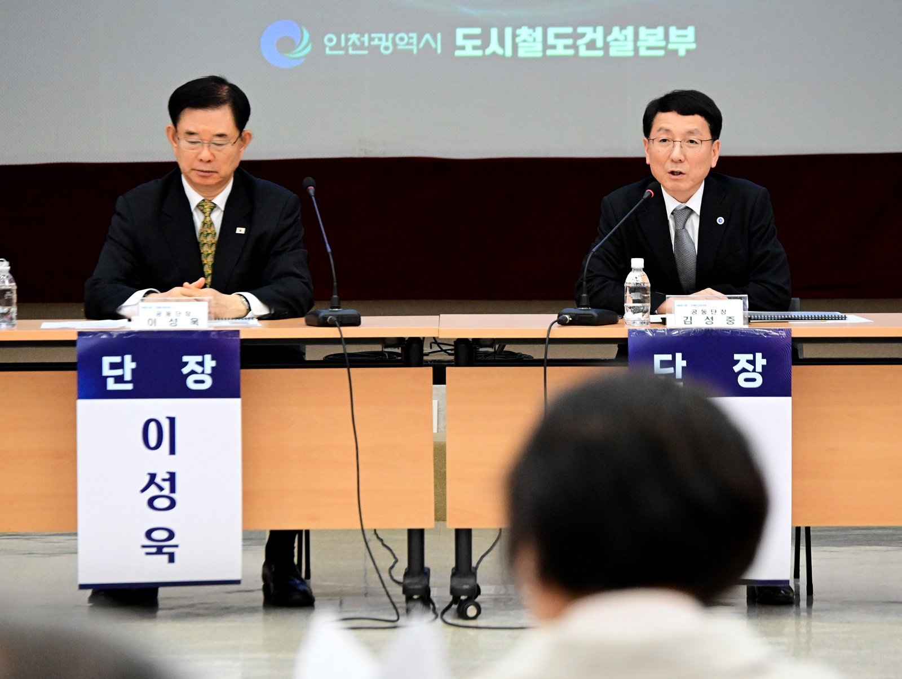
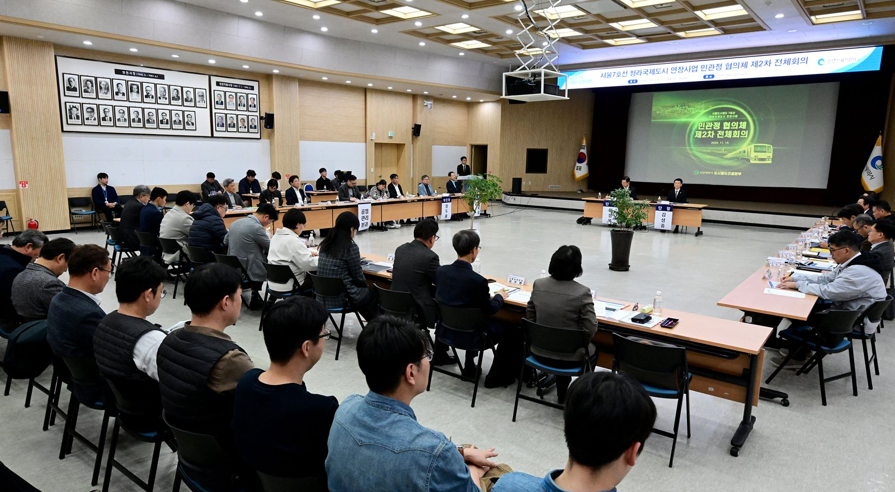

청라연장선 지연 대책 중간 결과, 전동차 임차와 버스 증차
민관정 협의체 2차 전체회의, 네 분과 중간 결과 보고
발표에 없는 새 개통 시점과 추가 사업비 규모
18일 청라3동 행정복지센터에서 주민공청회
AI경제저널=김갑봉 기자 | 인천시(시장 박찬대)가 서울7호선 청라국제도시 연장사업 민관정 협의체 제2차 전체회의를 열었다고 13일 밝혔다. 시청 대회의실 회의에서는 개통 지연 종합대책의 중간 결과를 논의했다. 시는 오는 18일 주민공청회를 연다. 새 개통 시점은 이날 발표에 없었다.

네 분과가 석 달 동안 다룬 대책
회의에는 김성중 행정부시장과 이성욱 공동단장, 김교흥·이용우 국회의원, 주민대표, 외부 전문가, 관계 공무원 등이 참석했다.
협의체는 지난 8월 출범했다. 공정관리, 전동차대응, 재정행정지원, 교통대책 네 분과로 나눠 논의해 왔다. 시는 공정점검 태스크포스(TF)를 함께 운영해 왔다고 밝혔다.
건축·시스템 병행 시공, 전기공사 24시간
공정 분과는 공구별 공정계획과 공기단축 방안을 다시 검토했다. 주요 방안은 건축·시스템 공사 병행 시공, 전기공사 24시간 작업, 003정거장 구조물 측벽 되메우기 공정 개선이다.
시는 공기단축 방안을 더 검토하고 있다고 밝혔다. 분과는 대책을 구체화하고 있다.
전동차는 임차와 경기도 공동발주
전동차 분과는 서울교통공사와 협의해 대폐차 대상 전동차를 빌려 쓰는 방안을 주요 대책으로 내놨다. 새 전동차는 경기도 옥정연장 사업과 공동 발주를 추진한다. 제작 기간을 줄이고 사업비를 아끼려는 계획이라고 시는 밝혔다.
재정행정 분과는 공기 단축과 전동차 확보에 드는 추가 사업비 재원 방안을 보고했다. 시는 지역구 국회의원과 국비 확보를 추진하고 총사업비 조정 절차를 밟을 계획이다.

개통 전 시내버스 증차와 M버스 신설
교통대책 분과는 시내버스 증차와 광역급행버스(M버스) 노선 신설을 보고했다. 간선급행버스체계(BRT) 임시 노선 운영과 유도무궤도차량(GRT) 운영체계 개선도 들어 있다.
김성중 행정부시장은 "서울7호선 청라국제도시 연장사업의 개통 지연에 대해 무거운 책임감을 느끼고 있다"고 말했다. 이어 "실효성 있는 종합대책을 마련하고, 연내 시민께 설명드리겠다"고 했다.
중간 결과가 청라 주민에게 말하는 것
2022년 3월 착공식에서 박남춘 당시 인천시장은 2027년 적기 개통에 최선을 다하겠다고 말했다. 지난 2월 시가 밝힌 2022~2029년 총사업비는 1조6322억원이었다. 13일 발표에도 새 개통 시점과 지연 기간, 지금 공정률, 추가 사업비 규모는 없었다.
한승헌(연세대 사회환경시스템공학부) 등 연구진은 2006년 「대한토목학회논문집」에 경부고속철도 공기지연을 분석해 실었다. 연구진은 전체 약 5년 지연 가운데 4년여가 서울~천안 「2-1공구」 한 곳에서 생겼다고 밝혔다.
이 공구에서는 터널 공사 중 폐광이 나와 노선을 바꿨다. 연구진은 교량의 동적 거동을 고려하지 못한 설계에 따른 재설계·재시공과 불충분한 지질조사를 주요 지연 원인으로 들었다.
공청회는 18일 오후 7시 서해구 청라3동 행정복지센터에서 열린다. 시는 사업 추진 현황과 공정 지연 원인, 공기단축·전동차·교통 대책을 설명하고 주민 의견을 듣는다.
참고문헌
- "대형 건설사업의 공기지연분석: 경부고속철도 건설사업을 중심으로", 한승헌·윤성민·이상현, 「대한토목학회논문집」 26권 5D호 839~848쪽, 2006, https://www.koreascience.kr/article/JAKO200630335056409.page
- "인천시, 서울7호선 청라 연장'개통 지연 대책'점검, 민관정 협의체 전체회의 개최", 인천광역시 도시철도건설본부 건설총괄부, 2026.11.13, https://www.incheon.go.kr/IC010205/view?repSeq=DOM_0000000015965274
- "인천시, 서울7호선 청라 연장 정상화 위한 '민·관·정 협의체' 출범 회의", 인천광역시 도시철도건설본부 공사시설부, 2026.08.12, https://www.incheon.go.kr/IC010205/view?repSeq=DOM_0000000015319793
- "인천시, 청라연장선 건설사업에 지역업체 참여 확대 나선다", 인천광역시 도시철도건설본부 총무부, 2026.02.26, https://www.incheon.go.kr/IC010205/view?repSeq=DOM_0000000014236078
- "석남에서 청라가는 도시철도 7호선 연장, 첫 삽 떴다", 인천광역시 도시철도건설본부 공사시설부, 2022.03.23, https://www.incheon.go.kr/IC010205/view?repSeq=DOM_0000000004387600
[사진 출처]
- [사진1·2] 인천시 인천인터넷방송 포토시정 「서울7호선 청라국제도시 연장사업 민관정 협의체 제2차 전체회의」(2026.11.13) https://www.incheon.go.kr/intv/TV010201/3094736
관련기사
- 청라연장선 시공사 경영진 간담회, 발표에 없는 새 개통 시점
- 인천도시철도 무임승차 4년 새 78.7% 증가…못 받은 운임 533억원
- 부평·주안 국가산단 재생에 341억원…주차 493면 확충
- 남동산단 복합문화센터 「산다락」 개관, 58억원 들인 1408㎡
저작권자 © AI경제저널 무단전재 및 재배포, AI학습 및 활용 금지